Repères du catalogue
Le catalogue de l’export du 18 novembre 2026 rassemble trois cent quatre-vingt-dix pièces d’armure et de protection. Elles ne se valent pas : une visière en verre, un casque en titane et une plaque céramique ne répondent pas au même calcul. Les chiffres ci-dessous servent à trier le catalogue, pas à le classer.
390
Pièces. Cent cinq gilets tactiques, quarante-neuf gilets pare-balles, quatre-vingt-treize casques, vingt masques, trente-huit plaques, soixante-dix-neuf accessoires blindés et six protections oculaires.
8
Matériaux. Aramid, UHMWPE, matériau combiné, titane, aluminium, acier de blindage, céramique et verre. Chacun a sa destructibilité et son usure de réparation.
97
Pièces à plaques. Quatre-vingt-dix-sept pièces acceptent une plaque balistique dans au moins un emplacement. Le reste ne protège que par sa propre matière.
La distinction qui compte. Un gilet tactique est un porteur : il contient des poches, il pèse, il a une capacité. Un gilet pare-balles est une surface de protection pour le corps. Les deux se portent ensemble, et le second n’est jamais aussi solide que la plaque qu’il reçoit.
Le modèle de protection
Dans Tarkov, la protection ne se lit pas sur une seule ligne. Elle se lit en quatre couches successives, et c’est la couche la plus basse qui décide du résultat d’un tir.
1
La zone. Le corps est découpé en zones : poitrine, ventre, bassin, tête, bras, jambes. Chaque pièce couvre un ensemble de zones, et le jeu calcule le tir zone par zone.
2
La classe. De 1 à 6, la classe mesure la capacité d’une matière à arrêter une munition. Elle est attachée à la plaque ou à l’armure souple, pas au gilet qui la porte.
3
La durabilité. Chaque impact entame la matière. La valeur de la fiche est la résistance totale de la pièce avant qu’elle ne cède complètement.
4
La mobilité. Poids, pénalité de vitesse, de rotation et d’ergonomie. Une armure qui vous protège mais vous empêche de sprinter est un choix, pas une amélioration.
La règle de pénétration appliquée par le jeu depuis le correctif 0.14.6.0 du 25 avril 2024 est détaillée sur la page balistique : une classe est franchie de façon fiable à partir de quinze points de pénétration au-dessus de sa valeur.
Les huit matériaux
La matière détermine la destructibilité, c’est-à-dire la part de sa résistance qui part à chaque impact, et l’usure appliquée lors d’une réparation. Les deux valeurs viennent de l’export : elles sont identiques pour toutes les pièces d’un même matériau.
| Matériau | Destructibilité | Usure (réparation) | Usure (kit de réparation) |
|---|---|---|---|
| Aramid | 0.1875 | 3 % – 7 % | 2 % – 6 % |
| UHMWPE | 0.3375 | 1 % – 3 % | 0 % – 2 % |
| Matériau combiné | 0.375 | 10 % – 15 % | 9 % – 14 % |
| Titane | 0.4125 | 6 % – 10 % | 6 % – 9 % |
| Aluminium | 0.45 | 6 % – 10 % | 6 % – 9 % |
| Acier de blindage | 0.525 | 1 % – 3 % | 0 % – 2 % |
| Céramique | 0.6 | 17 % – 22 % | 16 % – 20 % |
| Verre | 0.6 | 23 % – 42 % | 21 % – 38 % |
La colonne Réparation donne la perte de résistance entre la version neuve et la version réparée. Un matériau peu destructible mais très usé se répare mal : c’est le compromis du titane et de l’aluminium.
Les six classes
La classe va de 1 à 6. Elle décrit la matière, pas la pièce entière : une plaque de classe 6 montée dans un gilet de classe 2 protège autant que la plaque, pour les zones que la plaque couvre.
| Classe | Pièces | Durabilité | Matériaux dominants |
|---|---|---|---|
| Classe 1 | 13 | 20 – 180 | Verre, Aramid, UHMWPE |
| Classe 2 | 25 | 20 – 156 | Aramid, Verre, UHMWPE |
| Classe 3 | 95 | 14 – 240 | Aramid, UHMWPE, Aluminium |
| Classe 4 | 117 | 14 – 246 | Aramid, Matériau combiné, UHMWPE |
| Classe 5 | 61 | 15 – 440 | Aramid, Acier de blindage, Matériau combiné |
| Classe 6 | 32 | 18 – 510 | Aramid, Céramique, Acier de blindage |
| Sans classe | 47 | — | Gilet tactique, Masque |
Les quarante-sept pièces sans classe ne sont pas des pièces sans blindage : ce sont les accessoires dont la catégorie n’implique pas de protection chiffrée, comme une visière ou une protection auditive. Elles restent dans le catalogue et sont signalées comme telles.
Le catalogue des pièces
Les trois cent quatre-vingt-dix pièces de l’export, avec leur classe, leur matériau, leur durabilité, leur poids et leur prix de base. Le tableau est filtrable : les filtres portent sur la catégorie, la classe, le matériau et la présence d’emplacements de plaque.
390 pièces affichées sur 390
| Image | Pièce | Classe | Matériau | Durabilité | Zones | Poids (kg) | Emplacements à plaques | Prix de base (₽) |
|---|---|---|---|---|---|---|---|---|
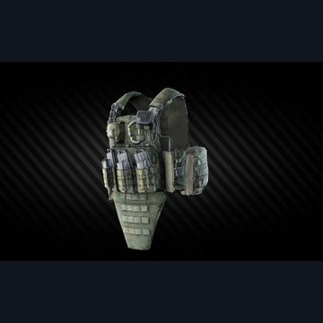 | Gilet tactique porte-plaques Crye Precision AVS (Ranger Green)Gilet tactique | 4 | Aramid | 212 | 6 | 2,88 kg | 2 / 5 | 58 629 ₽ |
 | Gilet pare-balles 6B43 6A Zabralo-Sh (Digital Flora)Gilet pare-balles | 6 | Aramid | 510 | 15 | 10,80 kg | 4 / 12 | 113 046 ₽ |
 | Casque FORT Kiver-MCasque | 3 | UHMWPE | 63 | 3 | 1,20 kg | 0 / 3 | 31 121 ₽ |
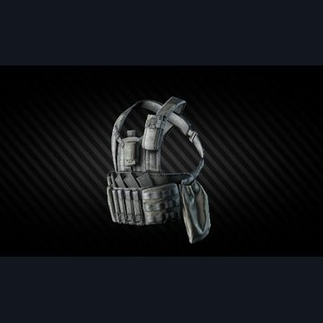 | Gilet tactique BlackRock (gris)Gilet tactique | — | — | — | 0 | 1,80 kg | 0 / 0 | 40 700 ₽ |
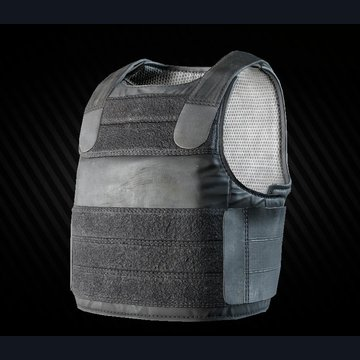 | Gilet pare-balles souple PACAGilet pare-balles | 2 | Aramid | 100 | 6 | 3,50 kg | 0 / 4 | 26 263 ₽ |
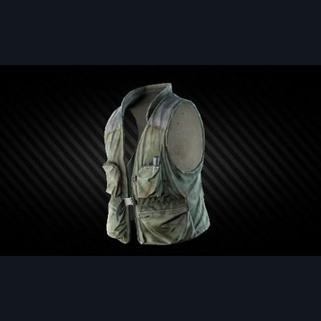 | Gilet de scavGilet tactique | — | — | — | 0 | 0,40 kg | 0 / 0 | 4 199 ₽ |
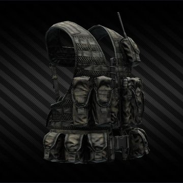 | Gilet tactique UMTBS 6Sh112 Scout-Sniper (Digital Flora)Gilet tactique | — | — | — | 0 | 1,70 kg | 0 / 0 | 21 423 ₽ |
 | Gilet Tactique ANA Tactical Alpha (Olive Drab)Gilet tactique | — | — | — | 0 | 1,70 kg | 0 / 0 | 42 881 ₽ |
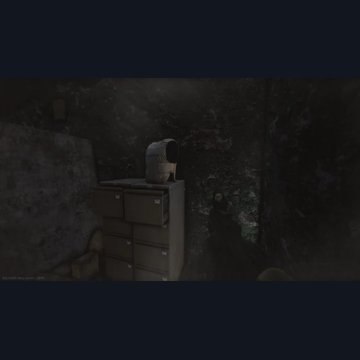 | Gilet pare-balles BNTI Module-3MGilet pare-balles | 2 | Aramid | 80 | 6 | 6 kg | 0 / 4 | 21 453 ₽ |
 | Gilet tactique WARTECH TV-109 + TV-106 (A-TACS FG)Gilet tactique | — | — | — | 0 | 1,80 kg | 0 / 0 | 14 252 ₽ |
 | Lunettes balistiquesProtection oculaire | 1 | Verre | 25 | 0 | 0,11 kg | 0 / 0 | 16 900 ₽ |
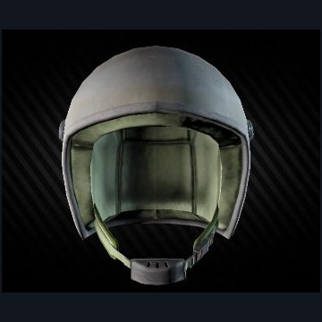 | Casque anti-émeute Kolpak-1SCasque | 2 | Aramid | 45 | 3 | 1,90 kg | 0 / 3 | 7 999 ₽ |
 | Casque citrouille tactiqueCasque | 2 | UHMWPE | 40 | 8 | 1,20 kg | 0 / 0 | 10 000 ₽ |
 | Casque Ops-Core FAST MT Super High Cut (noir)Casque | 4 | Matériau combiné | 48 | 2 | 0,90 kg | 0 / 2 | 105 405 ₽ |
 | Visière pare-balles pour Ops-Core FASTAccessoire blindé | 2 | Verre | 20 | 2 | 0,32 kg | 0 / 0 | 13 452 ₽ |
 | Visière pare-balles multi-coups pour Ops-Core FASTAccessoire blindé | 3 | Verre | 40 | 3 | 1,20 kg | 0 / 0 | 39 961 ₽ |
 | Mandibule Gunsight pour Ops-Core FASTAccessoire blindé | 2 | Aramid | 20 | 2 | 1,20 kg | 0 / 0 | 26 675 ₽ |
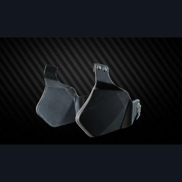 | Pare-balles latéral pour Ops-Core FASTAccessoire blindé | 3 | Aluminium | 25 | 1 | 1,20 kg | 0 / 0 | 34 469 ₽ |
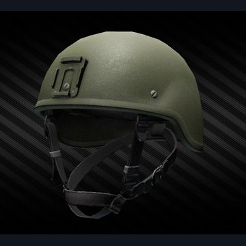 | Casque 6B47 Ratnik-BSh (Olive Drab)Casque | 3 | Aramid | 45 | 3 | 1,30 kg | 0 / 3 | 35 862 ₽ |
 | Casque 6B47 Ratnik-BSh (Digital Flora)Casque | 3 | Aramid | 45 | 3 | 1,30 kg | 0 / 3 | 35 410 ₽ |
 | Casque UNTARCasque | 3 | Aramid | 45 | 3 | 2,20 kg | 0 / 3 | 28 333 ₽ |
 | Casque SSSh-94 SFERA-SCasque | 3 | Acier de blindage | 135 | 3 | 3,50 kg | 0 / 3 | 31 999 ₽ |
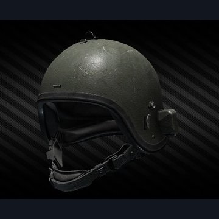 | Casque pare-balles Altyn (Olive Drab)Casque | 5 | Acier de blindage | 81 | 3 | 2,50 kg | 0 / 3 | 168 000 ₽ |
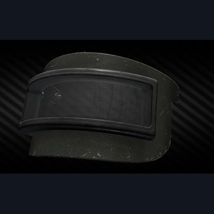 | Visière pare-balles pour AltynAccessoire blindé | 5 | Matériau combiné | 50 | 3 | 1,40 kg | 0 / 0 | 67 363 ₽ |
 | Visière pare-balles pour ZSh-1-2MAccessoire blindé | 3 | Verre | 50 | 3 | 1 kg | 0 / 0 | 26 894 ₽ |
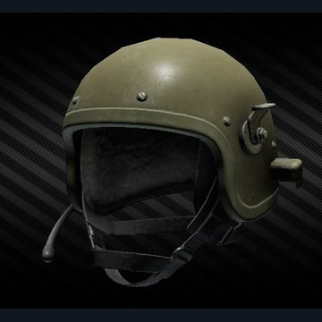 | Casque ZSh-1-2M (Olive Drab)Casque | 4 | Matériau combiné | 63 | 3 | 3,70 kg | 0 / 3 | 48 929 ₽ |
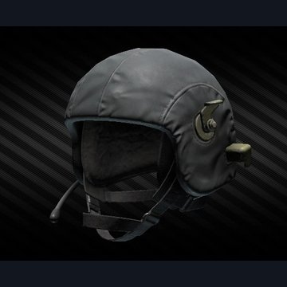 | Casque Zsh-1-2M (noir)Casque | 4 | Matériau combiné | 63 | 3 | 3,70 kg | 0 / 3 | 44 599 ₽ |
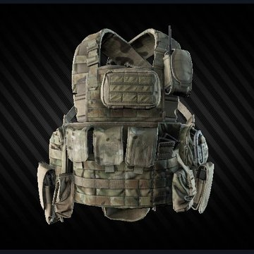 | Gilet tactique WARTECH MK3 TV-104 (MultiCam)Gilet tactique | — | — | — | 0 | 1,65 kg | 0 / 0 | 36 958 ₽ |
 | Gilet tactique porte-plaques ANA Tactical M2 (Digital Flora)Gilet tactique | 4 | Aramid | 206 | 10 | 2,25 kg | 4 / 8 | 51 362 ₽ |
 | Gilet pare-balles MF-UNTARGilet pare-balles | 3 | Aluminium | 100 | 6 | 8,50 kg | 0 / 4 | 26 225 ₽ |
 | Gilet pare-balles BNTI Gzhel-KGilet pare-balles | 5 | Aramid | 259 | 12 | 2,95 kg | 4 / 9 | 78 098 ₽ |
 | Visière pour Kolpak-1SAccessoire blindé | 2 | Verre | 30 | 3 | 1 kg | 0 / 0 | 4 851 ₽ |
 | Casque Ops-Core FAST MT Super High Cut (Urban Tan)Casque | 4 | Matériau combiné | 48 | 2 | 0,90 kg | 0 / 2 | 95 101 ₽ |
 | Casque HighCom Striker ULACH IIIA (noir)Casque | 4 | UHMWPE | 66 | 3 | 1,90 kg | 0 / 3 | 93 579 ₽ |
 | Casque HighCom Striker ULACH IIIA (Desert Tan)Casque | 4 | UHMWPE | 66 | 3 | 1,90 kg | 0 / 3 | 87 426 ₽ |
 | Casque HighCom Striker ACHHC IIIA (noir)Casque | 4 | Matériau combiné | 36 | 2 | 1,20 kg | 0 / 2 | 52 160 ₽ |
 | Casque HighCom Striker ACHHC IIIA (Olive Drab)Casque | 4 | Matériau combiné | 36 | 2 | 1,20 kg | 0 / 2 | 53 040 ₽ |
 | Masque à gaz DevTac RoninCasque | 4 | Matériau combiné | 180 | 6 | 2,65 kg | 0 / 5 | 69 442 ₽ |
 | Masque griffé blindéMasque | — | — | — | 0 | 0,30 kg | 0 / 0 | 7 500 ₽ |
 | Lunettes anti-fragmentation 6B34Protection oculaire | 1 | Verre | 25 | 0 | 0,12 kg | 0 / 0 | 17 100 ₽ |
 | Casque léger LZSh (Olive Drab)Casque | 3 | Aramid | 36 | 2 | 0,95 kg | 0 / 2 | 32 145 ₽ |
 | Harnais tactique BlackHawk! Commando (Desert Tan)Gilet tactique | — | — | — | 0 | 1,35 kg | 0 / 0 | 28 618 ₽ |
 | Gilet tactique porte-plaques 5.11 Tactical TacTec (Ranger Green)Gilet tactique | 5 | Aramid | 170 | 4 | 2,35 kg | 2 / 4 | 52 398 ₽ |
 | Gilet pare-balles IOTV Gen4 (protection intégrale, MultiCam)Gilet pare-balles | 5 | Aramid | 398 | 16 | 9,08 kg | 4 / 13 | 100 483 ₽ |
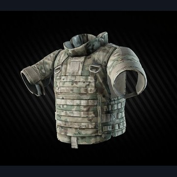 | Gilet pare-balles IOTV Gen4 (kit assaut, MultiCam)Gilet pare-balles | 5 | Aramid | 362 | 14 | 8,18 kg | 4 / 11 | 86 681 ₽ |
 | Gilet pare-balles IOTV Gen4 (kit haute mobilité, MultiCam)Gilet pare-balles | 5 | Aramid | 320 | 14 | 7,88 kg | 4 / 11 | 83 289 ₽ |
 | Gilet pare-balles BNTI Kirasa-NGilet pare-balles | 3 | Matériau combiné | 240 | 10 | 3 kg | 2 / 7 | 20 740 ₽ |
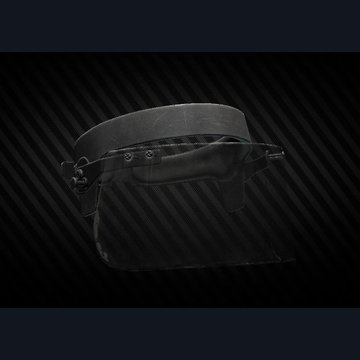 | Visière pare-balles pour Kiver-MAccessoire blindé | 3 | Verre | 40 | 3 | 1,20 kg | 0 / 0 | 25 070 ₽ |
 | Casque acier SSh-68 (Olive Drab)Casque | 3 | Acier de blindage | 54 | 3 | 1,50 kg | 0 / 3 | 26 201 ₽ |
 | Casque de pompier ShPMCasque | 2 | Aramid | 96 | 7 | 1,50 kg | 0 / 4 | 9 200 ₽ |
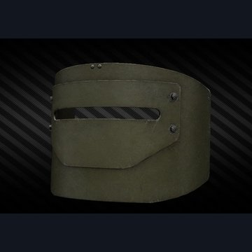 | Visière pare-balles pour Maska-1Sch (Olive)Accessoire blindé | 6 | Acier de blindage | 50 | 3 | 1,10 kg | 0 / 0 | 72 250 ₽ |
 | Casque pare-balles Maska-1Sch (Olive Drab)Casque | 4 | Acier de blindage | 108 | 3 | 2,60 kg | 0 / 3 | 62 132 ₽ |
 | Casque anti-émeute PSh-97 "DJETA"Casque | 2 | Aramid | 156 | 5 | 1,30 kg | 0 / 4 | 10 299 ₽ |
 | Gilet tactique pare-balles 6B5-16 Zh-86 Uley (kaki)Gilet tactique | 3 | Titane | 160 | 7 | 7,10 kg | 0 / 4 | 39 044 ₽ |
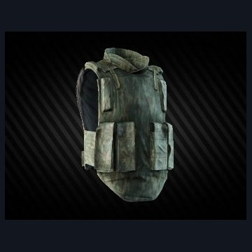 | Gilet tactique pare-balles 6B5-15 Zh-86 Uley (Flora)Gilet tactique | 4 | Aramid | 110 | 7 | 12,20 kg | 0 / 4 | 51 139 ₽ |
 | Gilet d'assaut pare-balles 6B13 (Flora)Gilet pare-balles | 4 | Aramid | 203 | 11 | 2,80 kg | 2 / 8 | 30 655 ₽ |
 | Gilet d'assaut pare-balles 6B13 (Digital Flora)Gilet pare-balles | 4 | Aramid | 203 | 11 | 2,80 kg | 2 / 8 | 30 655 ₽ |
 | Gilet d'assaut pare-balles 6B13 M (édition Killa)Gilet pare-balles | 5 | Aramid | 249 | 11 | 2,80 kg | 2 / 8 | 148 542 ₽ |
 | Gilet pare-balles 6B23-2 (Mountain Flora)Gilet pare-balles | 4 | Aramid | 246 | 12 | 3,30 kg | 2 / 9 | 34 794 ₽ |
 | Gilet pare-balles 6B23-1 (Digital Flora)Gilet pare-balles | 3 | Aramid | 206 | 12 | 3,30 kg | 2 / 9 | 25 077 ₽ |
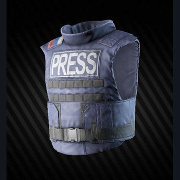 | Gilet pare-balles BNTI Zhuk (presse)Gilet pare-balles | 3 | Aramid | 185 | 14 | 2,37 kg | 4 / 9 | 16 319 ₽ |
 | Gilet pare-balles BNTI Zhuk (EMR)Gilet pare-balles | 6 | Aramid | 305 | 12 | 2,97 kg | 4 / 9 | 94 152 ₽ |
 | Gilet pare-balles HighCom Trooper TFO (MultiCam)Gilet pare-balles | 4 | Aramid | 180 | 6 | 4,10 kg | 2 / 4 | 55 760 ₽ |
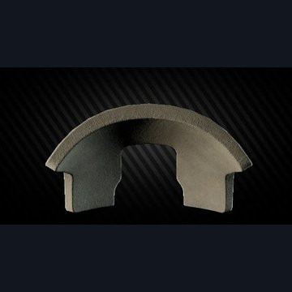 | Plaque pare-balles Ops-Core SLAAP (Tan)Accessoire blindé | 5 | UHMWPE | 30 | 1 | 1,30 kg | 0 / 0 | 111 625 ₽ |
 | Gilet tactique Poyas-A + Poyas-BGilet tactique | — | — | — | 0 | 1,70 kg | 0 / 0 | 41 325 ₽ |
 | Gilet tactique pare-balles ANA Tactical M1 (Olive Drab)Gilet tactique | 4 | Aramid | 194 | 10 | 2,95 kg | 4 / 8 | 38 032 ₽ |
 | Gilet tactique porte-plaques WARTECH TV-110 (Coyote)Gilet tactique | 4 | Aramid | 160 | 4 | 3,50 kg | 2 / 4 | 26 042 ₽ |
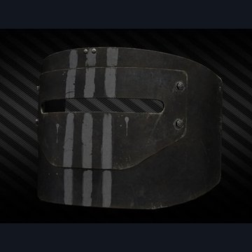 | Visière pare-balles pour Maska-1Sch (édition Killa)Accessoire blindé | 6 | Acier de blindage | 50 | 3 | 1,10 kg | 0 / 0 | 92 190 ₽ |
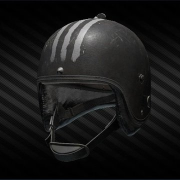 | Casque pare-balles Maska-1Sch (édition Killa)Casque | 4 | Acier de blindage | 108 | 3 | 2,60 kg | 0 / 3 | 67 397 ₽ |
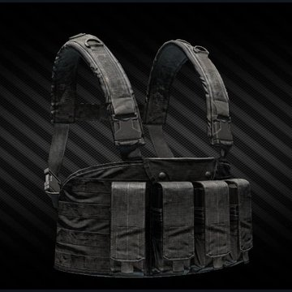 | Harnais tactique Blackhawk! Commando (noir)Gilet tactique | — | — | — | 0 | 1,35 kg | 0 / 0 | 28 618 ₽ |
 | Chops pour Crye Precision AirframeAccessoire blindé | 3 | Aluminium | 30 | 2 | 1,45 kg | 0 / 0 | 59 675 ₽ |
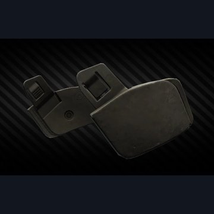 | Couvre-oreilles pour Crye Precision AirFrameAccessoire blindé | 3 | Aluminium | 27 | 1 | 1,20 kg | 0 / 0 | 48 125 ₽ |
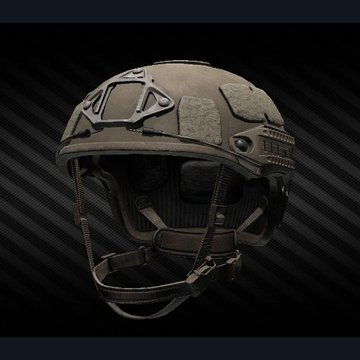 | Casque Crye Precision AirFrame (Tan)Casque | 4 | Matériau combiné | 48 | 2 | 0,88 kg | 0 / 2 | 87 457 ₽ |
 | Harnais tactique Dynaforce Triton M43-A (noir)Gilet tactique | — | — | — | 0 | 1,30 kg | 0 / 0 | 23 822 ₽ |
 | Casque pare-balles Vulkan-5 LShZ-5 (noir)Casque | 5 | Matériau combiné | 75 | 3 | 4,50 kg | 0 / 3 | 146 491 ₽ |
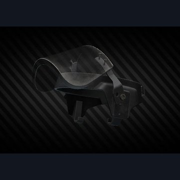 | Visière pare-balles pour Vulkan-5Accessoire blindé | 4 | Verre | 85 | 3 | 1,80 kg | 0 / 0 | 62 468 ₽ |
 | Gilet pare-balles FORT Redut-MGilet pare-balles | 5 | Aramid | 358 | 14 | 7,70 kg | 4 / 11 | 74 907 ₽ |
 | Gilet pare-balles FORT Redut-T5 (Smog)Gilet pare-balles | 6 | Aramid | 504 | 16 | 8,10 kg | 4 / 13 | 106 865 ₽ |
 | Gilet tactique pare-balles 6B3TM-01 (kaki)Gilet tactique | 4 | Titane | 86 | 6 | 8,20 kg | 0 / 4 | 44 420 ₽ |
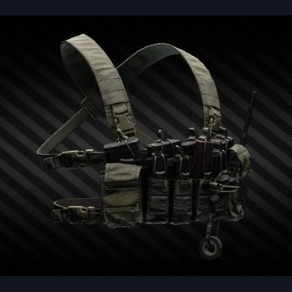 | Harnais tactique Haley Strategic D3CRX (Ranger Green)Gilet tactique | — | — | — | 0 | 0,90 kg | 0 / 0 | 31 600 ₽ |
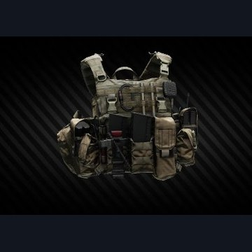 | Gilet tactique porte-plaques Ars Arma A18 Skanda (MultiCam)Gilet tactique | 4 | Aramid | 186 | 8 | 2,45 kg | 4 / 8 | 25 718 ₽ |
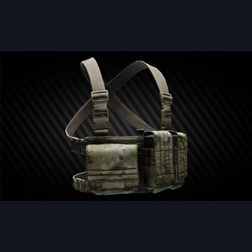 | Gilet tactique SOE Micro Rig (MultiCam)Gilet tactique | — | — | — | 0 | 0,80 kg | 0 / 0 | 9 600 ₽ |
 | Casque MSA ACH TC-2001 MICH Series (Olive Drab)Casque | 4 | Matériau combiné | 30 | 2 | 1,40 kg | 0 / 2 | 52 139 ₽ |
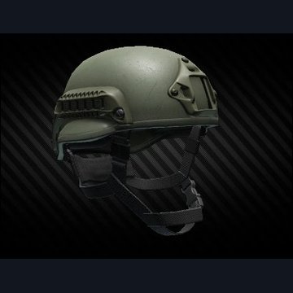 | Casque MSA ACH TC-2002 MICH Series (Olive Drab)Casque | 4 | Matériau combiné | 32 | 2 | 1,45 kg | 0 / 2 | 49 251 ₽ |
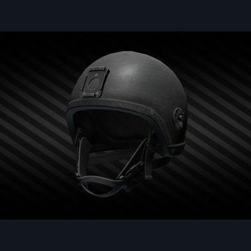 | Casque BNTI LShZ-2DTM (noir)Casque | 4 | Matériau combiné | 99 | 3 | 3,40 kg | 0 / 3 | 78 199 ₽ |
 | Visière pare-balles pour LShZ-2DTMAccessoire blindé | 4 | Verre | 50 | 3 | 1 kg | 0 / 0 | 33 350 ₽ |
 | Bavolet pour LSHZ-2DTMAccessoire blindé | 5 | Matériau combiné | 35 | 1 | 1,20 kg | 0 / 0 | 33 200 ₽ |
 | Gilet pare-balles 6B2 (flora)Gilet pare-balles | 2 | Aramid | 128 | 4 | 5,40 kg | 0 / 2 | 17 942 ₽ |
 | Gilet tactique Velocity Systems MPPV (Wolf Grey)Gilet tactique | — | — | — | 0 | 1,60 kg | 0 / 0 | 43 296 ₽ |
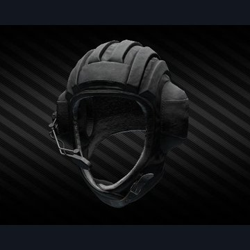 | Casque TSH-4M-L souple d'équipage de charsCasque | 1 | Aramid | 105 | 3 | 0,90 kg | 0 / 3 | 6 000 ₽ |
 | Casque balistique Team Wendy EXFIL (noir)Casque | 4 | Matériau combiné | 54 | 2 | 1,18 kg | 0 / 2 | 113 166 ₽ |
 | Visière pare-balles pour Team Wendy EXFIL (noire)Accessoire blindé | 3 | Verre | 45 | 3 | 0,80 kg | 0 / 0 | 48 825 ₽ |
 | Couvre-oreilles pour Team Wendy EXFIL (noir)Accessoire blindé | 3 | Aluminium | 30 | 1 | 0,17 kg | 0 / 0 | 49 000 ₽ |
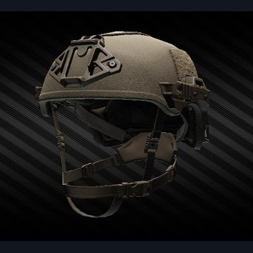 | Casque balistique Team Wendy EXFIL (Coyote Brown)Casque | 4 | Matériau combiné | 54 | 2 | 1,18 kg | 0 / 2 | 101 350 ₽ |
 | Couvre-oreilles pour Team Wendy EXFIL (Coyote Brown)Accessoire blindé | 3 | Aluminium | 30 | 1 | 0,17 kg | 0 / 0 | 49 000 ₽ |
 | Visière pare-balles pour Team Wendy EXFIL (Coyote Brown)Accessoire blindé | 3 | Verre | 45 | 3 | 0,80 kg | 0 / 0 | 48 825 ₽ |
 | Gilet porte-plaques LBT-6094A Slick (noir)Gilet pare-balles | 6 | Aramid | 200 | 4 | 1,30 kg | 2 / 4 | 64 200 ₽ |
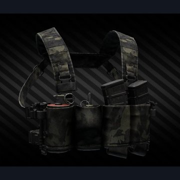 | Gilet tactique Spiritus Systems Bank Robber (MultiCam noir)Gilet tactique | — | — | — | 0 | 0,70 kg | 0 / 0 | 8 200 ₽ |
 | Gilet tactique Splav Tarzan M22 (Smog)Gilet tactique | — | — | — | 0 | 1,45 kg | 0 / 0 | 19 200 ₽ |
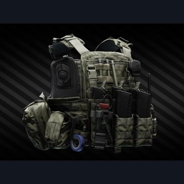 | Gilet tactique porte-plaques Ars Arma CPC MOD.1 (A-TACS FG)Gilet tactique | 5 | Aramid | 240 | 8 | 2,75 kg | 4 / 8 | 68 990 ₽ |
 | Casque de combat MSA Gallet TC 800 High Cut (noir)Casque | 4 | Matériau combiné | 36 | 2 | 1,17 kg | 0 / 2 | 54 120 ₽ |
 | Gilet pare-balles FORT Defender-2Gilet pare-balles | 5 | Acier de blindage | 320 | 10 | 5,70 kg | 2 / 8 | 80 609 ₽ |
 | Gilet tactique LBT-1961A (MAS Grey)Gilet tactique | — | — | — | 0 | 1,36 kg | 0 / 0 | 38 250 ₽ |
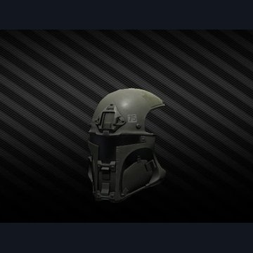 | Masque Tac-Kek Heavy Trooper pour casques type Ops-CoreAccessoire blindé | 2 | Aramid | 45 | 5 | 0,40 kg | 0 / 0 | 61 000 ₽ |
 | Casque Tac-Kek FAST MT (réplique)Casque | 1 | UHMWPE | 48 | 2 | 0,45 kg | 0 / 2 | 11 000 ₽ |
 | Casque Diamond Age Bastion (noir)Casque | 4 | Matériau combiné | 48 | 2 | 1,07 kg | 0 / 2 | 59 545 ₽ |
 | Protection pare-balles pour Diamond Age BastionAccessoire blindé | 6 | Céramique | 40 | 2 | 0,99 kg | 0 / 0 | 121 330 ₽ |
 | Gilet pare-balles NPP KlASS Korund-VM (noir)Gilet pare-balles | 5 | Aramid | 310 | 14 | 1,90 kg | 4 / 11 | 48 428 ₽ |
 | Gilet tactique compact Direct Action Thunderbolt (Shadow Grey)Gilet tactique | — | — | — | 0 | 0,62 kg | 0 / 0 | 25 160 ₽ |
 | Casque Galvion Caiman HybridCasque | 3 | Matériau combiné | 60 | 2 | 1,12 kg | 0 / 2 | 51 320 ₽ |
 | Applique pare-balles Galvion pour Caiman HybridAccessoire blindé | 4 | UHMWPE | 40 | 2 | 0,68 kg | 0 / 0 | 66 330 ₽ |
 | Visière pare-balles fixe Galvion pour CaimanAccessoire blindé | 2 | Verre | 30 | 2 | 0,27 kg | 0 / 0 | 22 437 ₽ |
 | Mandibule pare-balles Galvion pour Caiman HybridAccessoire blindé | 2 | Aramid | 20 | 1 | 1,10 kg | 0 / 0 | 24 500 ₽ |
 | Casque Rys-TCasque | 5 | Titane | 90 | 3 | 2,50 kg | 0 / 3 | 178 001 ₽ |
 | Visière pare-balles pour Rys-TAccessoire blindé | 5 | Matériau combiné | 55 | 3 | 1,20 kg | 0 / 0 | 79 460 ₽ |
 | Gilet porte-plaques 5.11 Tactical HexgridGilet pare-balles | 6 | UHMWPE | 100 | 2 | 1,02 kg | 2 / 2 | 25 996 ₽ |
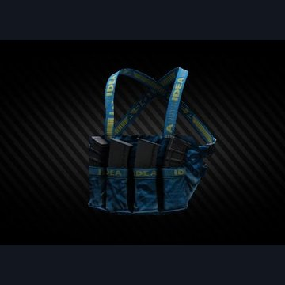 | Gilet tactique artisanal IDEAGilet tactique | — | — | — | 0 | 0,22 kg | 0 / 0 | 5 000 ₽ |
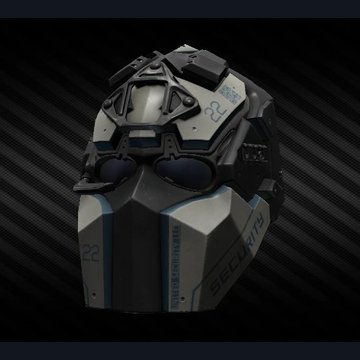 | Gilet de sécuritéGilet tactique | — | — | — | 0 | 0,51 kg | 0 / 0 | 3 900 ₽ |
 | Gilet tactique Gear Craft GC-BSS-MK1Gilet tactique | — | — | — | 0 | 1 kg | 0 / 0 | 30 015 ₽ |
 | Lunettes NPP KIASS CondorProtection oculaire | 1 | Verre | 25 | 0 | 0,03 kg | 0 / 0 | 15 600 ₽ |
 | Gilet de chasseur Umka М33-SET1Gilet tactique | — | — | — | 0 | 1,20 kg | 0 / 0 | 25 700 ₽ |
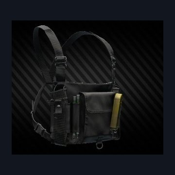 | Gilet tactique CSAGilet tactique | — | — | — | 0 | 0,75 kg | 0 / 0 | 10 242 ₽ |
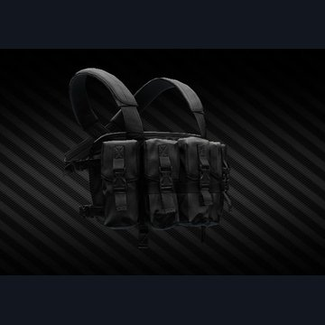 | Harnais tactique Azimut SS Zhuk (noir)Gilet tactique | — | — | — | 0 | 1,60 kg | 0 / 0 | 30 148 ₽ |
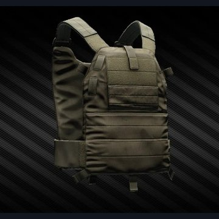 | Gilet porte-plaques LBT-6094A Slick (Coyote Tan)Gilet pare-balles | 6 | Aramid | 200 | 4 | 1,30 kg | 2 / 4 | 64 200 ₽ |
 | Gilet porte-plaques LBT-6094A Slick (Olive Drab)Gilet pare-balles | 6 | Aramid | 200 | 4 | 1,30 kg | 2 / 4 | 64 200 ₽ |
 | Harnais tactique Azimut SS Zhuk (SURPAT)Gilet tactique | — | — | — | 0 | 1,60 kg | 0 / 0 | 30 148 ₽ |
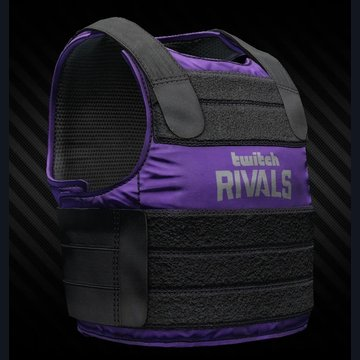 | Gilet pare-balles souple PACA (édition Rivals)Gilet pare-balles | 2 | Aramid | 100 | 6 | 3,50 kg | 0 / 4 | 52 839 ₽ |
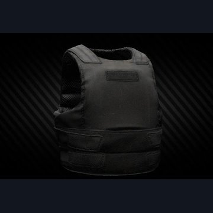 | Gilet pare-balles NFM THOR Concealable Reinforced VestGilet pare-balles | 4 | UHMWPE | 170 | 10 | 1,70 kg | 4 / 8 | 38 097 ₽ |
 | Gilet tactique porte-plaques Crye Precision AVS (édition Tagilla)Gilet tactique | 6 | Aramid | 170 | 4 | 1,98 kg | 2 / 4 | 49 903 ₽ |
 | Gilet pare-balles NFM THOR Integrated CarrierGilet pare-balles | 6 | UHMWPE | 466 | 15 | 8,50 kg | 4 / 12 | 129 502 ₽ |
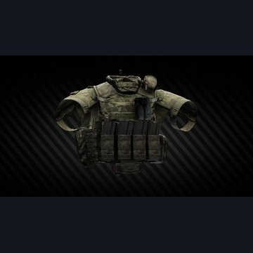 | Gilet tactique porte-plaques CQC Osprey MK4A (Protection, MTP)Gilet tactique | 5 | Aramid | 272 | 14 | 6,90 kg | 4 / 11 | 82 278 ₽ |
 | Gilet tactique porte-plaques CQC Osprey MK4A (Assaut, MTP)Gilet tactique | 4 | Aramid | 222 | 14 | 6,40 kg | 4 / 11 | 49 216 ₽ |
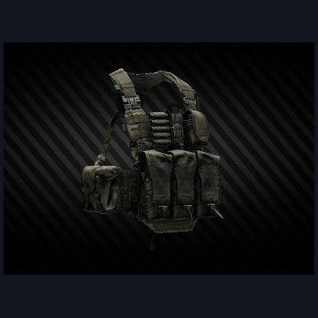 | Gilet tactique Stich Profi MK2 (Assaut, A-TACS FG)Gilet tactique | — | — | — | 0 | 1,75 kg | 0 / 0 | 33 750 ₽ |
 | Gilet tactique Stich Profi MK2 (Reconnaissance, A-TACS FG)Gilet tactique | — | — | — | 0 | 1,40 kg | 0 / 0 | 32 400 ₽ |
 | Masque de soudure de Tagilla "UBEY"Masque | 5 | Acier de blindage | 40 | 5 | 1,50 kg | 0 / 0 | 135 000 ₽ |
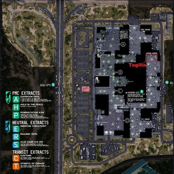 | Masque de soudure de Tagilla "Gorilla"Masque | 5 | Acier de blindage | 40 | 5 | 1,50 kg | 0 / 0 | 135 000 ₽ |
 | Bonnet BomberCasque | 1 | Aramid | 150 | 1 | 0,10 kg | 0 / 0 | 29 700 ₽ |
 | Gilet tactique porte-plaques Eagle Industries MMAC (Ranger Green)Gilet tactique | 4 | Aramid | 144 | 8 | 2,83 kg | 4 / 8 | 22 059 ₽ |
 | Casque NFM HJELMCasque | 3 | Matériau combiné | 78 | 2 | 0,80 kg | 0 / 2 | 58 131 ₽ |
 | Gilet tactique porte-plaques FirstSpear Strandhogg (Ranger Green)Gilet tactique | 4 | Aramid | 198 | 9 | 3,20 kg | 4 / 9 | 36 118 ₽ |
 | Gilet tactique porte-plaques S&S Precision PlateFrame (édition sbire)Gilet tactique | 5 | UHMWPE | 120 | 4 | 1,32 kg | 4 / 4 | 50 398 ₽ |
 | Gilet tactique porte-plaques Crye Precision CPC (édition sbire)Gilet tactique | 5 | Aramid | 230 | 8 | 3,70 kg | 4 / 8 | 68 779 ₽ |
 | Harnais tactique LBT-1961A (édition sbire)Gilet tactique | — | — | — | 0 | 1,36 kg | 0 / 0 | 49 000 ₽ |
 | Gilet tactique porte-plaques Tasmanian Tiger SK (MultiCam noir)Gilet tactique | 6 | UHMWPE | 110 | 2 | 1,50 kg | 2 / 2 | 24 148 ₽ |
 | Gilet tactique pare-balles NPP KlASS BagariyGilet tactique | 5 | Aramid | 232 | 10 | 5,10 kg | 4 / 8 | 51 684 ₽ |
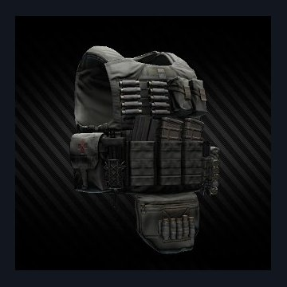 | Gilet tactique porte-plaques ECLiPSE RBAV-AF (vert Ranger)Gilet tactique | 4 | Aramid | 218 | 9 | 2,65 kg | 4 / 9 | 34 271 ₽ |
 | Masque de Death KnightMasque | 1 | Aramid | 55 | 2 | 0,78 kg | 0 / 0 | 72 000 ₽ |
 | Gilet pare-balles DRDGilet pare-balles | 3 | Aramid | 120 | 6 | 4 kg | 0 / 4 | 55 802 ₽ |
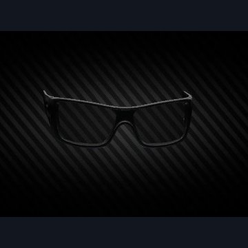 | Lunettes Oakley SI BatwolfProtection oculaire | 1 | Verre | 20 | 0 | 0,05 kg | 0 / 0 | 20 700 ₽ |
 | Harnais tactique Azimut SS "Khamelion" (Olive)Gilet tactique | — | — | — | 0 | 1,70 kg | 0 / 0 | 50 000 ₽ |
 | Gilet porte-plaques Hexatac HPC (MultiCam noir)Gilet pare-balles | 5 | Aramid | 90 | 2 | 0,47 kg | 2 / 2 | 31 398 ₽ |
 | Gilet tactique porte-plaques Shellback Tactical Banshee (A-TACS AU)Gilet tactique | 4 | Aramid | 152 | 8 | 3,08 kg | 4 / 8 | 24 760 ₽ |
 | Gilet tactique porte-plaques WARTECH TV-115 (Olive Drab)Gilet tactique | 3 | Aramid | 122 | 4 | 1,02 kg | 2 / 4 | 8 772 ₽ |
 | Gilet tactique porte-plaques Eagle Allied Industries MBSSGilet tactique | 3 | Aramid | 70 | 2 | 1,33 kg | 2 / 2 | 16 094 ₽ |
 | Gilet pare-balles Interceptor OTV (UCP)Gilet pare-balles | 4 | Aramid | 222 | 8 | 3,80 kg | 2 / 6 | 40 491 ₽ |
 | Plaque balistique Granit Br5Plaque de blindage | 6 | Céramique | 60 | 2 | 3,30 kg | 0 / 0 | 61 955 ₽ |
 | Plaque balistique Granit (flanc)Plaque de blindage | 6 | Céramique | 20 | 4 | 1,30 kg | 0 / 0 | 14 521 ₽ |
 | Plaque balistique ESBI niveau IV (flanc)Plaque de blindage | 6 | Céramique | 18 | 4 | 1,15 kg | 0 / 0 | 16 120 ₽ |
 | Plaque balistique ESAPI niveau IVPlaque de blindage | 6 | Céramique | 55 | 2 | 3,20 kg | 0 / 0 | 72 426 ₽ |
 | Gilet tactique Zulu Nylon Gear M4 Reduced Signature (Ranger Green)Gilet tactique | — | — | — | 0 | 0,52 kg | 0 / 0 | 8 066 ₽ |
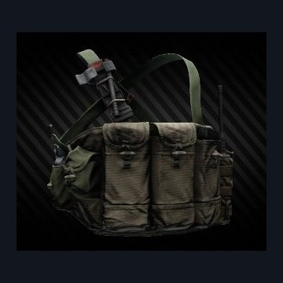 | Harnais tactique Chicom Type 56Gilet tactique | — | — | — | 0 | 0,65 kg | 0 / 0 | 9 341 ₽ |
 | Gilet pare-balles NPP KlASS Kora-Kulon (noir)Gilet pare-balles | 3 | Acier de blindage | 128 | 4 | 11,10 kg | 0 / 2 | 33 242 ₽ |
 | Gilet pare-balles NPP KlASS Kora-Kulon (Digital Flora)Gilet pare-balles | 3 | Acier de blindage | 128 | 4 | 11,10 kg | 0 / 2 | 33 242 ₽ |
 | Plaque balistique Granit 4RS (arrière)Plaque de blindage | 6 | Céramique | 50 | 1 | 3,80 kg | 0 / 0 | 49 626 ₽ |
 | Plaques balistiques 6B12 (avant)Plaque de blindage | 3 | Acier de blindage | 50 | 1 | 4,60 kg | 0 / 0 | 12 418 ₽ |
 | Plaque balistique Korund-VM (flanc)Plaque de blindage | 5 | Acier de blindage | 25 | 4 | 1,10 kg | 0 / 0 | 7 627 ₽ |
 | Plaque balistique Granit Br4Plaque de blindage | 5 | Céramique | 55 | 2 | 2,90 kg | 0 / 0 | 39 146 ₽ |
 | Plaque balistique SSAPI niveau III+ (flanc)Plaque de blindage | 5 | Céramique | 15 | 4 | 1 kg | 0 / 0 | 8 804 ₽ |
 | Plaque balistique SAPI niveau III+Plaque de blindage | 5 | Céramique | 50 | 2 | 1,82 kg | 0 / 0 | 37 084 ₽ |
 | Plaques balistiques Granit 4 (arrière)Plaque de blindage | 5 | Céramique | 45 | 1 | 3,30 kg | 0 / 0 | 32 703 ₽ |
 | Plaques balistiques 6B13 modifiées (arrière)Plaque de blindage | 4 | Acier de blindage | 45 | 1 | 4,10 kg | 0 / 0 | 12 038 ₽ |
 | Plaque balistique Zhuk-3 (avant)Plaque de blindage | 3 | UHMWPE | 40 | 1 | 2,40 kg | 0 / 0 | 10 185 ₽ |
 | Plaque balistique 6B33 (avant)Plaque de blindage | 4 | Acier de blindage | 50 | 1 | 3,70 kg | 0 / 0 | 15 207 ₽ |
 | Plaque balistique Granit 4 (avant)Plaque de blindage | 5 | Céramique | 50 | 1 | 3,05 kg | 0 / 0 | 34 756 ₽ |
| Plaque balistique Granit 4RS (avant)Plaque de blindage | 6 | Céramique | 55 | 1 | 3,50 kg | 0 / 0 | 51 402 ₽ | |
 | Plaques balistiques Korund-VM (avant)Plaque de blindage | 5 | Acier de blindage | 60 | 1 | 3,40 kg | 0 / 0 | 32 780 ₽ |
 | Plaques balistiques Korund VM-K (avant)Plaque de blindage | 6 | Céramique | 60 | 1 | 4 kg | 0 / 0 | 53 531 ₽ |
 | Plaque balistique AR500 Legacy PlatePlaque de blindage | 3 | Matériau combiné | 45 | 2 | 3,85 kg | 0 / 0 | 12 580 ₽ |
 | Plaque balistique SPRTN OmegaPlaque de blindage | 4 | Matériau combiné | 50 | 2 | 4,39 kg | 0 / 0 | 18 241 ₽ |
 | Plaque balistique Global Armor's acierPlaque de blindage | 4 | Acier de blindage | 45 | 2 | 3,40 kg | 0 / 0 | 16 079 ₽ |
 | Plaque balistique Kiba Arms titanePlaque de blindage | 4 | Titane | 55 | 2 | 2,25 kg | 0 / 0 | 21 620 ₽ |
 | Plaque balistique TallCom GuardianPlaque de blindage | 5 | Matériau combiné | 55 | 2 | 3,50 kg | 0 / 0 | 36 807 ₽ |
 | Plaque balistique NESCO 4400-SA-MCPlaque de blindage | 6 | Matériau combiné | 60 | 2 | 3,60 kg | 0 / 0 | 68 217 ₽ |
 | Plaque balistique Kiba Arms acierPlaque de blindage | 6 | Acier de blindage | 50 | 2 | 5,10 kg | 0 / 0 | 52 900 ₽ |
 | Plaque balistique Cult LocustPlaque de blindage | 5 | Titane | 60 | 2 | 2,56 kg | 0 / 0 | 40 355 ₽ |
 | Plaque balistique Cult TermitePlaque de blindage | 6 | Titane | 65 | 2 | 3,85 kg | 0 / 0 | 77 018 ₽ |
 | Plaque balistique légère PRTCTRPlaque de blindage | 3 | UHMWPE | 35 | 2 | 0,43 kg | 0 / 0 | 13 018 ₽ |
 | Plaque balistique Monoclete niveau III PEPlaque de blindage | 4 | UHMWPE | 40 | 2 | 1,35 kg | 0 / 0 | 18 620 ₽ |
 | Plaque balistique GAC 3s15mPlaque de blindage | 5 | UHMWPE | 45 | 2 | 0,97 kg | 0 / 0 | 53 801 ₽ |
 | Plaque balistique GAC 4sss2Plaque de blindage | 6 | UHMWPE | 50 | 2 | 2,70 kg | 0 / 0 | 85 002 ₽ |
 | Plaque balistique KITECO SC-IV SAPlaque de blindage | 6 | UHMWPE | 45 | 2 | 2,45 kg | 0 / 0 | 69 705 ₽ |
 | Plaque balistique SPRTN ElaphrosPlaque de blindage | 4 | Céramique | 45 | 2 | 1,60 kg | 0 / 0 | 17 254 ₽ |
 | Plaque balistique NewSphereTech niveau IIIPlaque de blindage | 4 | Aluminium | 45 | 2 | 2,15 kg | 0 / 0 | 16 842 ₽ |
 | Masque balistique Atomic Defense CQCM (noir)Masque | 3 | UHMWPE | 35 | 4 | 2,10 kg | 0 / 0 | 74 802 ₽ |
 | Casque Diamond Age NeoSteel High Cut (noir)Casque | 4 | Acier de blindage | 72 | 2 | 1,20 kg | 0 / 2 | 81 354 ₽ |
 | Mandibule pare-balles pour Diamond Age NeoSteelAccessoire blindé | 3 | Acier de blindage | 25 | 4 | 1,20 kg | 0 / 0 | 37 850 ₽ |
 | Casque NPP KlASS Tor-2 (Olive Drab)Casque | 3 | Matériau combiné | 81 | 3 | 2,40 kg | 0 / 3 | 52 681 ₽ |
 | Visière pare-balles pour NPP KlASS Tor-2Accessoire blindé | 3 | Verre | 30 | 3 | 1,15 kg | 0 / 0 | 32 040 ₽ |
 | Plaque balistique 6B23-2 (arrière)Plaque de blindage | 4 | Acier de blindage | 40 | 1 | 3,50 kg | 0 / 0 | 11 201 ₽ |
 | Plaque balistique Korund-VM (arrière)Plaque de blindage | 5 | Acier de blindage | 40 | 1 | 2,30 kg | 0 / 0 | 26 538 ₽ |
 | Plaque balistique Korund-VM-K (arrière)Plaque de blindage | 6 | Céramique | 45 | 1 | 2,70 kg | 0 / 0 | 42 641 ₽ |
 | Casque balistique Armor Co. Bastion (Armor Black)Casque | 4 | Matériau combiné | 50 | 2 | 1,44 kg | 0 / 2 | 69 444 ₽ |
 | Casque balistique Armor Co. Bastion (OD Green)Casque | 4 | Matériau combiné | 50 | 2 | 1,44 kg | 0 / 2 | 65 823 ₽ |
 | Casque balistique Armor Co. Bastion (MultiCam)Casque | 4 | Matériau combiné | 50 | 2 | 1,44 kg | 0 / 2 | 62 412 ₽ |
 | Gilet porte-plaques Stich Profi Stich Defense mod.2 (MultiCam)Gilet tactique | 6 | Aramid | 220 | 8 | 2,71 kg | 4 / 8 | 53 592 ₽ |
| Gilet porte-plaques Tasmanian Tiger MKIII (Coyote Brown)Gilet tactique | 5 | Aramid | 110 | 2 | 3,08 kg | 2 / 2 | 22 155 ₽ | |
 | Gilet porte-plaques Stich Profi V2 (noir)Gilet tactique | 4 | Aramid | 198 | 9 | 2,20 kg | 4 / 9 | 34 041 ₽ |
| DevTac Ronin helmetCasque | 3 | Aramid | 180 | 6 | 1,38 kg | 0 / 5 | 32 097 ₽ | |
 | Casque 6B47 Ratnik-BSh (EMR Arctic)Casque | 3 | Aramid | 45 | 3 | 1,30 kg | 0 / 3 | 35 675 ₽ |
 | Gilet tactique Spiritus Systems Bank Robber (MultiCam Alpine)Gilet tactique | — | — | — | 0 | 0,70 kg | 0 / 0 | 8 200 ₽ |
 | Gilet d'assaut pare-balles 6B13 M (édition de Noël)Gilet pare-balles | 5 | Aramid | 249 | 11 | 2,80 kg | 2 / 8 | 198 542 ₽ |
| Casque balistique MTEK FLUX (MultiCam Alpine)Casque | 4 | Matériau combiné | 50 | 2 | 1 kg | 0 / 2 | 97 711 ₽ | |
| Casque balistique MTEK FLUX (Olive Drab)Casque | 4 | Matériau combiné | 50 | 2 | 1 kg | 0 / 2 | 97 525 ₽ | |
 | Casque balistique MTEK STRIKE (Coyote)Casque | 4 | Matériau combiné | 40 | 2 | 0,90 kg | 0 / 2 | 55 604 ₽ |
 | Casque balistique MTEK STRIKE (Coyote/MultiCam Arid)Casque | 4 | Matériau combiné | 40 | 2 | 0,95 kg | 0 / 2 | 56 511 ₽ |
 | Casque pare-balles Maska-1Sch (édition de Noël)Casque | 4 | Acier de blindage | 108 | 3 | 2,70 kg | 0 / 3 | 67 397 ₽ |
 | Masque de soudure de Tagilla "ZABEY"Masque | 6 | Acier de blindage | 100 | 8 | 1,50 kg | 0 / 0 | 1 ₽ |
 | Atomic Defense CQCM ballistic mask (Smile)Masque | 3 | UHMWPE | 35 | 4 | 2,10 kg | 0 / 0 | 108 463 ₽ |
 | Atomic Defense CQCM ballistic mask (Stop Me)Masque | 3 | UHMWPE | 35 | 4 | 1,50 kg | 0 / 0 | 108 463 ₽ |
| Atomic Defense CQCM ballistic mask (Scars)Masque | 3 | UHMWPE | 35 | 4 | 1,50 kg | 0 / 0 | 108 463 ₽ | |
 | Atomic Defense CQCM ballistic mask (Target)Masque | 3 | UHMWPE | 35 | 4 | 1,50 kg | 0 / 0 | 108 463 ₽ |
 | Atomic Defense CQCM ballistic mask (Skull)Masque | 3 | UHMWPE | 35 | 4 | 1,50 kg | 0 / 0 | 108 463 ₽ |
 | Atomic Defense CQCM ballistic mask (Demon)Masque | 3 | UHMWPE | 35 | 4 | 1,50 kg | 0 / 0 | 108 463 ₽ |
 | Atomic Defense CQCM ballistic mask (El Día de Muertos)Masque | 3 | UHMWPE | 35 | 4 | 1,50 kg | 0 / 0 | 108 463 ₽ |
 | Gilet porte-plaques Hexatac HPC (MultiCam)Gilet pare-balles | 5 | Aramid | 90 | 2 | 0,47 kg | 2 / 2 | 31 398 ₽ |
 | Gilet pare-balles BNTI Kirasa-N (vert)Gilet pare-balles | 3 | Matériau combiné | 240 | 10 | 3 kg | 2 / 7 | 24 972 ₽ |
 | Gilet pare-balles FORT Redut-M (SK Woodland)Gilet pare-balles | 5 | Aramid | 358 | 14 | 7,70 kg | 4 / 11 | 74 907 ₽ |
 | Gilet pare-balles HighCom Trooper TFO (Coyote)Gilet pare-balles | 4 | Aramid | 180 | 6 | 4,10 kg | 2 / 4 | 55 760 ₽ |
 | Gilet tactique ANA Tactical Alpha (MultiCam)Gilet tactique | — | — | — | 0 | 1,70 kg | 0 / 0 | 64 322 ₽ |
 | Gilet tactique BlackRock (kaki)Gilet tactique | — | — | — | 0 | 1,80 kg | 0 / 0 | 54 945 ₽ |
 | Gilet tactique porte-plaques Crye Precision AVS (MultiCam)Gilet tactique | 4 | Aramid | 212 | 6 | 2,88 kg | 2 / 5 | 58 629 ₽ |
 | Gilet tactique porte-plaques 5.11 Tactical TacTec (Storm)Gilet tactique | 5 | Aramid | 170 | 4 | 2,35 kg | 2 / 4 | 52 398 ₽ |
| Atomic Defense CQCM ballistic mask (Ping)Masque | 3 | UHMWPE | 35 | 4 | 1,50 kg | 0 / 0 | 119 683 ₽ | |
 | Spiritus Systems LV-119 Plate Carrier (Black Division V1)Gilet tactique | 6 | Aramid | 220 | 6 | 3,90 kg | 2 / 6 | 86 352 ₽ |
 | Ferro Concepts FCPC V5 Plate Carrier (Black Division)Gilet tactique | 5 | Aramid | 198 | 6 | 5,30 kg | 2 / 6 | 68 398 ₽ |
 | Spiritus Systems LV-119 Plate Carrier (Black Division V2)Gilet tactique | 5 | Aramid | 198 | 4 | 5,10 kg | 2 / 4 | 72 385 ₽ |
| First Spear Siege-R Optimized M.A.S.S. Plate Carrier (Black Division)Gilet tactique | 5 | Aramid | 350 | 15 | 10,80 kg | 4 / 12 | 147 225 ₽ | |
| 6B45 body armor (EMR)Gilet pare-balles | 6 | Aramid | 374 | 12 | 3,65 kg | 4 / 9 | 76 708 ₽ | |
| 6B45 armored rig (General Purpose, EMR)Gilet tactique | 5 | Aramid | 364 | 12 | 4,36 kg | 4 / 9 | 81 558 ₽ | |
 | 6B45 armored rig (Medic, EMR)Gilet tactique | 5 | Aramid | 364 | 12 | 4,50 kg | 4 / 9 | 80 558 ₽ |
 | 6B45 armored rig (Assault, EMR)Gilet tactique | 6 | Aramid | 414 | 12 | 4,30 kg | 4 / 9 | 84 558 ₽ |
 | SHIELD Absolute Cinema hard hat (Orange)Casque | 2 | Aramid | 96 | 7 | 0,45 kg | 0 / 4 | 9 200 ₽ |
| SHIELD Absolute Cinema hard hat (White)Casque | 2 | Aramid | 96 | 7 | 0,45 kg | 0 / 4 | 9 200 ₽ | |
 | First Spear Strandhogg plate carrier (ABUPAT)Gilet tactique | 4 | Aramid | 198 | 9 | 3,20 kg | 4 / 9 | 36 118 ₽ |
| ANA Tactical Alpha chest rig (A-TACS AU)Gilet tactique | — | — | — | 0 | 1,70 kg | 0 / 0 | 64 322 ₽ | |
 | NFM THOR Concealable Reinforced Vest body armor (Head Eyes)Gilet pare-balles | 4 | UHMWPE | 170 | 10 | 1,70 kg | 4 / 8 | 38 097 ₽ |
 | Interceptor OTV body armor (Woodland)Gilet pare-balles | 4 | Aramid | 222 | 8 | 3,80 kg | 2 / 6 | 40 491 ₽ |
| NPP KlASS Korund-VM body armor (Kamysh)Gilet pare-balles | 5 | Aramid | 310 | 14 | 1,90 kg | 4 / 11 | 48 428 ₽ | |
| WARTECH MK3 TV-104 chest rig (Moss)Gilet tactique | — | — | — | 0 | 1,65 kg | 0 / 0 | 36 958 ₽ | |
 | Vulkan-5 LShZ-5 bulletproof helmet (Eight-ball)Casque | 5 | Matériau combiné | 75 | 3 | 4,50 kg | 0 / 3 | 146 491 ₽ |
 | Vulkan-5 LShZ-5 bulletproof helmet (Flame)Casque | 5 | Matériau combiné | 75 | 3 | 4,50 kg | 0 / 3 | 146 491 ₽ |
 | Vulkan-5 LShZ-5 bulletproof helmet (Camouflage)Casque | 5 | Matériau combiné | 75 | 3 | 4,50 kg | 0 / 3 | 146 491 ₽ |
 | Stich Profi Plate Carrier V2 (MARPAT Woodland)Gilet tactique | 4 | Aramid | 198 | 9 | 2,20 kg | 4 / 9 | 34 041 ₽ |
 | Atomic Defense CQCM ballistic mask (Loui Peeton)Masque | 3 | UHMWPE | 35 | 4 | 2,10 kg | 0 / 0 | 74 802 ₽ |
 | Atomic Defense CQCM ballistic mask (Toxic)Masque | 3 | UHMWPE | 35 | 4 | 2,10 kg | 0 / 0 | 74 802 ₽ |
 | Atomic Defense CQCM ballistic mask (Crash Tested)Masque | 3 | UHMWPE | 35 | 4 | 2,10 kg | 0 / 0 | 74 802 ₽ |
 | Atomic Defense CQCM ballistic mask (Demonic Face)Masque | 3 | UHMWPE | 35 | 4 | 2,10 kg | 0 / 0 | 74 802 ₽ |
 | DevTac Ronin Respirator (Beast)Casque | 4 | Matériau combiné | 180 | 6 | 2,65 kg | 0 / 5 | 69 442 ₽ |
| Masque à gaz DevTac Ronin)Casque | 4 | Matériau combiné | 180 | 6 | 2,65 kg | 0 / 5 | 69 442 ₽ |
 | Galvion Caiman Hybrid helmet (MultiCam)Casque | 3 | Matériau combiné | 60 | 2 | 1,12 kg | 0 / 2 | 51 320 ₽ |
| Galvion Caiman Hybrid helmet (Mutualist)Casque | 3 | Matériau combiné | 60 | 2 | 1,12 kg | 0 / 2 | 51 320 ₽ | |
 | Galvion Caiman Hybrid Ballistic Applique (MultiCam)Accessoire blindé | 4 | UHMWPE | 40 | 2 | 0,68 kg | 0 / 0 | 66 330 ₽ |
| Galvion Caiman Hybrid Ballistic Applique (Mutualist)Accessoire blindé | 4 | UHMWPE | 40 | 2 | 0,68 kg | 0 / 0 | 66 330 ₽ | |
 | Galvion Caiman Hybrid Ballistic Mandible Guard (MultiCam)Accessoire blindé | 2 | Aramid | 20 | 1 | 1,10 kg | 0 / 0 | 24 500 ₽ |
| Galvion Caiman Hybrid Ballistic Mandible Guard (Mutualist)Accessoire blindé | 2 | Aramid | 20 | 1 | 1,10 kg | 0 / 0 | 24 500 ₽ | |
 | Diamond Age NeoSteel High Cut helmet (Orange Stains)Casque | 4 | Acier de blindage | 72 | 2 | 1,20 kg | 0 / 2 | 81 354 ₽ |
 | Diamond Age NeoSteel High Cut helmet (Aces)Casque | 4 | Acier de blindage | 72 | 2 | 1,20 kg | 0 / 2 | 81 354 ₽ |
| Diamond Age NeoSteel helmet ballistic mandible (Black)Accessoire blindé | 3 | Acier de blindage | 25 | 4 | 1,20 kg | 0 / 0 | 37 850 ₽ | |
 | Diamond Age NeoSteel helmet ballistic mandible (Aces)Accessoire blindé | 3 | Acier de blindage | 25 | 4 | 1,20 kg | 0 / 0 | 37 850 ₽ |
 | Champion's helmetCasque | 4 | UHMWPE | 100 | 5 | 1,90 kg | 0 / 4 | 87 004 ₽ |
 | LBT-1961A Load Bearing Chest Rig (AOR1)Gilet tactique | — | — | — | 0 | 1,36 kg | 0 / 0 | 49 000 ₽ |
| HighCom Striker ULACH IIIA helmet (Sand)Casque | 4 | UHMWPE | 66 | 3 | 1,90 kg | 0 / 3 | 93 579 ₽ | |
 | HighCom Striker ULACH IIIA helmet (Green Stripes)Casque | 4 | UHMWPE | 66 | 3 | 1,90 kg | 0 / 3 | 93 579 ₽ |
 | HighCom Striker ULACH IIIA helmet (Mesh Spray)Casque | 4 | UHMWPE | 66 | 3 | 1,90 kg | 0 / 3 | 93 579 ₽ |
 | HighCom Striker ULACH IIIA helmet (Coyote Stripes)Casque | 4 | UHMWPE | 66 | 3 | 1,90 kg | 0 / 3 | 93 579 ₽ |
| Atomic Defense CQCM ballistic mask (Loui Peeton)Masque | 3 | UHMWPE | 35 | 4 | 2,10 kg | 0 / 0 | 74 802 ₽ |
 | Atomic Defense CQCM ballistic mask (Blasted Ice)Masque | 3 | UHMWPE | 35 | 4 | 2,10 kg | 0 / 0 | 74 802 ₽ |
 | Casque Galvion Caiman Hybrid (MultiCam Alpine)Casque | 3 | Matériau combiné | 60 | 2 | 1,12 kg | 0 / 2 | 51 320 ₽ |
| Galvion Caiman Hybrid Ballistic Mandible Guard (MultiCam Alpine)Accessoire blindé | 2 | Aramid | 20 | 1 | 1,10 kg | 0 / 0 | 24 500 ₽ | |
 | Galvion Caiman Hybrid Ballistic Applique (MultiCam Alpine)Accessoire blindé | 4 | UHMWPE | 20 | 2 | 0,68 kg | 0 / 0 | 66 330 ₽ |
 | HighCom Striker ULACH IIIA helmet (Winter Mesh Spray)Casque | 4 | UHMWPE | 66 | 3 | 1,90 kg | 0 / 3 | 93 579 ₽ |
 | Crye Precision JPC Plate Carrier (MultiCam)Gilet tactique | 5 | Aramid | 110 | 2 | 1,83 kg | 2 / 2 | 40 526 ₽ |
 | Tac-Kek JayPC plate carrier (Black)Gilet tactique | 1 | Aramid | 180 | 2 | 1,10 kg | 2 / 2 | 16 451 ₽ |
 | Tac-Kek JayPC plate carrier (OD Green)Gilet tactique | 1 | Aramid | 180 | 2 | 1,60 kg | 2 / 2 | 19 004 ₽ |
 | Gilet tactique porte-plaque ANA Tactical M2 (MultiCam Alpine)Gilet tactique | 4 | Aramid | 206 | 10 | 2,25 kg | 4 / 8 | 51 362 ₽ |
 | Plaque balistique Tac-Kek SAPI niveau III+ (réplique)Plaque de blindage | 1 | UHMWPE | 90 | 2 | 1,10 kg | 0 / 0 | 4 350 ₽ |
 | Casque pare-balles Maska-1Sch (édition Vida)Casque | 4 | Acier de blindage | 108 | 3 | 2,60 kg | 0 / 3 | 67 397 ₽ |
| Visière pare-balles pour Maska-1Sch (édition Vida)Accessoire blindé | 6 | Acier de blindage | 50 | 3 | 1,10 kg | 0 / 0 | 92 190 ₽ | |
 | Gilet tactique porte-plaques WARTECH TV-115 (noir)Gilet tactique | 3 | Aramid | 122 | 2 | 1,02 kg | 2 / 4 | 26 885 ₽ |
 | Gilet pare-balles FORT Defender-2 (Flecktarn)Gilet pare-balles | 5 | Acier de blindage | 320 | 10 | 5,70 kg | 2 / 8 | 80 609 ₽ |
 | Gilet tactique compact Direct Action Thunderbolt (Ranger Green)Gilet tactique | — | — | — | 0 | 0,62 kg | 0 / 0 | 25 160 ₽ |
 | Gilet tactique LBT-1961A (DNC)Gilet tactique | — | — | — | 0 | 1,36 kg | 0 / 0 | 38 250 ₽ |
 | Team Wendy EXFIL Ballistic Helmet (MultiCam)Casque | 4 | Matériau combiné | 54 | 2 | 1,18 kg | 0 / 2 | 101 350 ₽ |
 | HighCom Striker ACHHC IIIA helmet (Coyote Brown)Casque | 4 | Matériau combiné | 36 | 2 | 1,20 kg | 0 / 2 | 52 160 ₽ |
 | Crye Precision AirFrame Chops (Black)Accessoire blindé | 3 | Aluminium | 30 | 2 | 1,45 kg | 0 / 0 | 59 675 ₽ |
 | Crye Precision AirFrame Ears (Black)Accessoire blindé | 3 | Aluminium | 27 | 1 | 1,20 kg | 0 / 0 | 48 125 ₽ |
| Crye Precision AirFrame Chops (MultiCam)Accessoire blindé | 3 | Aluminium | 30 | 2 | 1,45 kg | 0 / 0 | 59 675 ₽ | |
| Crye Precision AirFrame Ears (MultiCam)Accessoire blindé | 3 | Aluminium | 27 | 1 | 1,20 kg | 0 / 0 | 48 125 ₽ | |
 | Crye Precision AirFrame Chops (OD Green)Accessoire blindé | 3 | Aluminium | 30 | 2 | 1,45 kg | 0 / 0 | 59 675 ₽ |
| Crye Precision AirFrame Ears (OD Green)Accessoire blindé | 3 | Aluminium | 27 | 1 | 1,20 kg | 0 / 0 | 48 125 ₽ | |
| Crye Precision AirFrame Chops (Shark)Accessoire blindé | 3 | Aluminium | 30 | 2 | 1,45 kg | 0 / 0 | 59 675 ₽ | |
 | Crye Precision AirFrame Ears (Coyote)Accessoire blindé | 3 | Aluminium | 27 | 1 | 1,20 kg | 0 / 0 | 48 125 ₽ |
 | Crye Precision AirFrame Chops (Morbus Incorsio)Accessoire blindé | 3 | Aluminium | 30 | 2 | 1,45 kg | 0 / 0 | 59 675 ₽ |
 | Crye Precision AirFrame Ears (Morbus Incorsio)Accessoire blindé | 3 | Aluminium | 27 | 1 | 1,20 kg | 0 / 0 | 48 125 ₽ |
 | Crye Precision AirFrame helmet (Mesh Green)Casque | 4 | Matériau combiné | 48 | 2 | 0,88 kg | 0 / 2 | 83 084 ₽ |
 | Crye Precision AirFrame helmet (OD Green)Casque | 4 | Matériau combiné | 48 | 2 | 0,88 kg | 0 / 2 | 87 457 ₽ |
 | Crye Precision AirFrame helmet (Shark)Casque | 4 | Matériau combiné | 48 | 2 | 0,88 kg | 0 / 2 | 87 457 ₽ |
| Crye Precision AirFrame helmet (Morbus Incorsio)Casque | 4 | Matériau combiné | 48 | 2 | 0,88 kg | 0 / 2 | 87 457 ₽ | |
 | Crye Precision AirFrame M-LOK helmet (Black)Casque | 4 | Matériau combiné | 48 | 2 | 0,88 kg | 0 / 2 | 87 457 ₽ |
 | Crye Precision AirFrame M-LOK helmet (Bull)Casque | 4 | Matériau combiné | 48 | 2 | 0,88 kg | 0 / 2 | 87 457 ₽ |
 | Crye Precision AirFrame helmet (Old School)Casque | 4 | Matériau combiné | 48 | 2 | 0,88 kg | 0 / 2 | 87 457 ₽ |
| Atlant Armour Titan Aramid helmet (OD Green)Casque | 4 | Matériau combiné | 48 | 2 | 1,58 kg | 0 / 2 | 87 457 ₽ | |
 | Atlant Armour Titan Aramid helmet (MultiCam)Casque | 4 | Matériau combiné | 48 | 2 | 1,58 kg | 0 / 2 | 87 457 ₽ |
 | Atlant Armour Titan Aramid helmet (Rudiarius)Casque | 4 | Matériau combiné | 78 | 5 | 3,42 kg | 0 / 4 | 108 567 ₽ |
 | FORT Redut-M body armor (Prisoner of the Arena)Gilet pare-balles | 5 | Aramid | 358 | 14 | 7,70 kg | 4 / 11 | 76 907 ₽ |
| Stich Profi Chest Rig MK2 (Recon, EMR)Gilet tactique | — | — | — | 0 | 1,40 kg | 0 / 0 | 32 400 ₽ | |
 | LBT-1961A Load Bearing Chest Rig (MultiCam)Gilet tactique | — | — | — | 0 | 1,36 kg | 0 / 0 | 38 250 ₽ |
 | Wiley X SPEAR ballistic goggles (Black)Protection oculaire | 1 | Verre | 25 | 0 | 0,12 kg | 0 / 0 | 12 755 ₽ |
 | Wiley X SPEAR ballistic goggles (Tan)Protection oculaire | 1 | Verre | 25 | 0 | 0,12 kg | 0 / 0 | 12 755 ₽ |
| FORT Redut-M body armor (Black)Gilet pare-balles | 5 | Aramid | 358 | 14 | 7,70 kg | 4 / 11 | 76 907 ₽ | |
 | Stich Profi Plate Carrier V2 (A-TACS FG)Gilet tactique | 4 | Aramid | 198 | 11 | 2,20 kg | 4 / 9 | 35 041 ₽ |
 | Stich Profi Plate Carrier V2 (Coyote)Gilet tactique | 4 | Aramid | 198 | 11 | 2,20 kg | 4 / 9 | 35 041 ₽ |
 | FORT Gladiator-S plate carrier (Death is Inevitable)Gilet tactique | 5 | Aramid | 440 | 15 | 7,12 kg | 4 / 12 | 106 118 ₽ |
 | FORT Gladiator-S plate carrier (Viking)Gilet tactique | 5 | Aramid | 282 | 7 | 3,05 kg | 2 / 5 | 76 270 ₽ |
 | FORT Gladiator-S plate carrier (Lightweight, MultiCam)Gilet tactique | 5 | Aramid | 270 | 6 | 2,77 kg | 2 / 4 | 68 696 ₽ |
 | FORT Gladiator-S plate carrier (MultiCam)Gilet tactique | 5 | Aramid | 345 | 9 | 4,83 kg | 2 / 7 | 94 803 ₽ |
 | First Spear Strandhogg plate carrier (MultiCam Black)Gilet tactique | 4 | Aramid | 198 | 7 | 3,20 kg | 4 / 9 | 36 118 ₽ |
 | Haley Strategic D3CRX Chest Harness (Black)Gilet tactique | — | — | — | 0 | 0,90 kg | 0 / 0 | 31 600 ₽ |
 | FORT Gladiator-S plate carrier (Gray)Gilet pare-balles | 5 | Aramid | 345 | 12 | 3,31 kg | 4 / 9 | 69 325 ₽ |
 | Spiritus Systems LV-119 Plate Carrier (MultiCam Black)Gilet tactique | 5 | Aramid | 198 | 4 | 5,10 kg | 2 / 4 | 72 385 ₽ |
 | ANA Tactical M2 plate carrier (A-TACS iX)Gilet tactique | 4 | Aramid | 206 | 10 | 2,25 kg | 4 / 8 | 51 362 ₽ |
| ANA Tactical M2 plate carrier (A-TACS AU-X)Gilet tactique | 4 | Aramid | 206 | 10 | 2,25 kg | 4 / 8 | 51 362 ₽ | |
 | Direct Action Thunderbolt compact chest rig (Marauder)Gilet tactique | — | — | — | 0 | 0,62 kg | 0 / 0 | 0 ₽ |
 | Direct Action Thunderbolt compact chest rig (PenCott WildWood)Gilet tactique | — | — | — | 0 | 0,62 kg | 0 / 0 | 25 160 ₽ |
 | Crye Precision AirFrame helmet (Botched)Casque | 4 | Matériau combiné | 48 | 2 | 0,88 kg | 0 / 2 | 87 457 ₽ |
 | Atlant Armour Titan Aramid helmet (EMR)Casque | 4 | Matériau combiné | 48 | 2 | 1,58 kg | 0 / 2 | 87 457 ₽ |
| MTEK STRIKE Ballistic helmet (Carbon Fiber)Casque | 4 | Matériau combiné | 40 | 2 | 0,90 kg | 0 / 2 | 55 604 ₽ | |
 | ANA Tactical M1 plate carrier (EMR)Gilet tactique | 4 | Aramid | 194 | 10 | 2,95 kg | 4 / 8 | 38 032 ₽ |
 | DevTac Ronin Respirator (LABS Security)Casque | 4 | Matériau combiné | 180 | 6 | 2,65 kg | 0 / 5 | 69 442 ₽ |
 | Blue Force Gear Ten-Speed SF Chest Rig (Ranger Green)Gilet tactique | — | — | — | 0 | 0,61 kg | 0 / 0 | 0 ₽ |
| Blue Force Gear PLATEminus V2 Plate Carrier (Wolf Gray)Gilet tactique | 2 | Aramid | 68 | 8 | 2,67 kg | 4 / 8 | 48 703 ₽ | |
 | Blue Force Gear PLATEminus V2 Plate Carrier (Scourge)Gilet tactique | 2 | Aramid | 68 | 8 | 2,28 kg | 4 / 8 | 54 703 ₽ |
 | Blue Force Gear PLATEminus V2 Plate Carrier (Coyote Brown)Gilet tactique | 2 | Aramid | 68 | 8 | 2,45 kg | 4 / 8 | 43 703 ₽ |
 | Blue Force Gear PLATEminus V2 Plate Carrier (MultiCam)Gilet tactique | 2 | Aramid | 68 | 8 | 2,41 kg | 4 / 8 | 43 703 ₽ |
| Haley Strategic D3CRX Chest Harness (Coyote Brown)Gilet tactique | — | — | — | 0 | 0,65 kg | 0 / 0 | 9 341 ₽ | |
 | Haley Strategic D3CRX Chest Harness (MultiCam)Gilet tactique | — | — | — | 0 | 0,65 kg | 0 / 0 | 25 250 ₽ |
| Stich Profi Stich Defense mod.2 plate carrier (Cleanup Crew)Gilet tactique | 3 | Aramid | 155 | 10 | 3,66 kg | 4 / 9 | 64 197 ₽ | |
| Stich Profi Stich Defense mod.2 plate carrier (A-TACS FG)Gilet tactique | 3 | Aramid | 155 | 10 | 3,66 kg | 4 / 9 | 64 197 ₽ | |
 | Blue Force Gear PLATEminus V2 body armor (Coyote Brown)Gilet pare-balles | 2 | Aramid | 68 | 8 | 1,37 kg | 4 / 8 | 38 703 ₽ |
 | Blue Force Gear PLATEminus V2 body armor (Wolf Gray)Gilet pare-balles | 2 | Aramid | 68 | 8 | 1,37 kg | 4 / 8 | 38 703 ₽ |
| Altyn assault helmet (Impact Tested)Casque | 5 | Acier de blindage | 81 | 3 | 2,50 kg | 0 / 3 | 168 000 ₽ | |
| Altyn helmet face shield (Impact Tested)Accessoire blindé | 5 | Matériau combiné | 50 | 3 | 1,40 kg | 0 / 0 | 67 363 ₽ | |
 | Diamond Age NovaSteel Flip Ballistic Mandible (Olive Drab)Accessoire blindé | 3 | Acier de blindage | 20 | 3 | 0,36 kg | 0 / 0 | 42 074 ₽ |
| Diamond Age NovaSteel Flip Ballistic Mandible (Custos Mortis)Accessoire blindé | 3 | Acier de blindage | 20 | 3 | 0,36 kg | 0 / 0 | 42 074 ₽ | |
| Diamond Age NovaSteel Flip Ballistic Mandible (Toxin)Accessoire blindé | 3 | Acier de blindage | 20 | 3 | 0,36 kg | 0 / 0 | 49 074 ₽ | |
 | Diamond Age NovaSteel AventailAccessoire blindé | 3 | Acier de blindage | 15 | 1 | 0,20 kg | 0 / 0 | 37 850 ₽ |
 | Diamond Age NovaSteel helmet (Olive Drab)Casque | 4 | Acier de blindage | 72 | 2 | 1,18 kg | 0 / 2 | 84 637 ₽ |
 | Diamond Age NovaSteel helmet (Custos Mortis)Casque | 4 | Acier de blindage | 72 | 2 | 1,18 kg | 0 / 2 | 86 497 ₽ |
 | Diamond Age NovaSteel helmet (Toxin)Casque | 4 | Acier de blindage | 72 | 2 | 1,18 kg | 0 / 2 | 90 888 ₽ |
| Team Wendy EXFIL Ballistic Mandible (Black)Accessoire blindé | 3 | UHMWPE | 36 | 4 | 0,59 kg | 0 / 0 | 46 820 ₽ | |
| Team Wendy EXFIL Ballistic Mandible (Coyote Brown)Accessoire blindé | 3 | UHMWPE | 36 | 4 | 0,59 kg | 0 / 0 | 46 820 ₽ | |
 | Team Wendy EXFIL Ballistic Mandible (MultiCam)Accessoire blindé | 3 | UHMWPE | 36 | 4 | 0,59 kg | 0 / 0 | 46 820 ₽ |
 | DevTac Ronin Face ArmorAccessoire blindé | 3 | Aramid | 21 | 3 | 0,55 kg | 0 / 0 | 21 110 ₽ |
 | DevTac Ronin Crown PlateAccessoire blindé | 3 | Aramid | 14 | 1 | 0,55 kg | 0 / 0 | 14 073 ₽ |
 | DevTac Ronin Reinforced Crown PlateAccessoire blindé | 4 | Aramid | 14 | 1 | 0,65 kg | 0 / 0 | 35 183 ₽ |
 | DevTac Ronin MandibleAccessoire blindé | 4 | Aramid | 21 | 3 | 0,67 kg | 0 / 0 | 52 775 ₽ |
| DevTac Ronin Face Armor (Raptor)Accessoire blindé | 3 | Aramid | 21 | 3 | 0,55 kg | 0 / 0 | 21 110 ₽ | |
 | DevTac Ronin Face Armor (Prototype)Accessoire blindé | 3 | Aramid | 21 | 3 | 0,55 kg | 0 / 0 | 21 110 ₽ |
 | DevTac Ronin Face Armor (Olive)Accessoire blindé | 3 | Aramid | 21 | 3 | 0,55 kg | 0 / 0 | 21 110 ₽ |
 | DevTac Ronin Face Armor (Olive Drab)Accessoire blindé | 3 | Aramid | 21 | 3 | 0,55 kg | 0 / 0 | 21 100 ₽ |
 | DevTac Ronin Face Armor (Plague)Accessoire blindé | 3 | Aramid | 21 | 3 | 0,55 kg | 0 / 0 | 21 100 ₽ |
 | DevTac Ronin Crown Plate (Raptor)Accessoire blindé | 3 | Aramid | 14 | 1 | 0,55 kg | 0 / 0 | 14 073 ₽ |
 | DevTac Ronin Crown Plate (Prototype)Accessoire blindé | 3 | Aramid | 14 | 1 | 0,55 kg | 0 / 0 | 14 073 ₽ |
| DevTac Ronin Crown Plate (Olive)Accessoire blindé | 3 | Aramid | 14 | 1 | 0,55 kg | 0 / 0 | 14 073 ₽ | |
 | DevTac Ronin Crown Plate (Olive Drab)Accessoire blindé | 3 | Aramid | 14 | 1 | 0,55 kg | 0 / 0 | 14 073 ₽ |
| DevTac Ronin Crown Plate (Plague)Accessoire blindé | 3 | Aramid | 14 | 1 | 0,55 kg | 0 / 0 | 14 073 ₽ | |
 | DevTac Ronin Reinforced Crown Plate (Raptor)Accessoire blindé | 4 | Aramid | 14 | 1 | 0,65 kg | 0 / 0 | 35 183 ₽ |
| DevTac Ronin Reinforced Crown Plate (Prototype)Accessoire blindé | 4 | Aramid | 14 | 1 | 0,65 kg | 0 / 0 | 35 183 ₽ | |
 | DevTac Ronin Reinforced Crown Plate (Olive)Accessoire blindé | 4 | Aramid | 14 | 1 | 0,65 kg | 0 / 0 | 35 183 ₽ |
 | DevTac Ronin Reinforced Crown Plate (Olive Drab)Accessoire blindé | 4 | Aramid | 14 | 1 | 0,65 kg | 0 / 0 | 35 183 ₽ |
| DevTac Ronin Reinforced Crown Plate (Plague)Accessoire blindé | 4 | Aramid | 14 | 1 | 0,65 kg | 0 / 0 | 35 183 ₽ | |
 | DevTac Ronin Mandible (Raptor)Accessoire blindé | 4 | Aramid | 21 | 3 | 0,67 kg | 0 / 0 | 52 775 ₽ |
 | DevTac Ronin Mandible (Prototype)Accessoire blindé | 4 | Aramid | 21 | 3 | 0,67 kg | 0 / 0 | 52 775 ₽ |
 | DevTac Ronin Mandible (Olive)Accessoire blindé | 4 | Aramid | 21 | 3 | 0,67 kg | 0 / 0 | 52 775 ₽ |
 | DevTac Ronin Mandible (Olive Drab)Accessoire blindé | 4 | Aramid | 21 | 3 | 0,67 kg | 0 / 0 | 52 775 ₽ |
| DevTac Ronin Mandible (Plague)Accessoire blindé | 4 | Aramid | 21 | 3 | 0,67 kg | 0 / 0 | 52 775 ₽ | |
 | DevTac Ronin ballistic helmet (Raptor)Casque | 3 | Aramid | 180 | 6 | 1,38 kg | 0 / 5 | 51 919 ₽ |
 | DevTac Ronin ballistic helmet (Prototype)Casque | 3 | Aramid | 180 | 6 | 1,38 kg | 0 / 5 | 51 919 ₽ |
 | DevTac Ronin ballistic helmet (Olive)Casque | 3 | Aramid | 180 | 6 | 1,38 kg | 0 / 5 | 40 097 ₽ |
| DevTac Ronin ballistic helmet (Olive Drab)Casque | 3 | Aramid | 180 | 6 | 1,38 kg | 0 / 5 | 32 097 ₽ |
La colonne Prix de base est le prix de base de l’export, hors frais de marchand. Le prix payé dépend du marchand, de son niveau de fidélité et de la devise : c’est le tableau de la page arsenal qui détaille les offres marchandes.
Plaques et emplacements
Les plaques balistiques ne s’insèrent pas n’importe où. Chaque pièce à plaque déclare les emplacements qu’elle propose et la liste des plaques autorisées pour chacun. C’est la compatibilité réelle, celle que le client vérifie au moment de l’équipement.
| Emplacement | Pièces | Plaques autorisées | Classe maximale |
|---|---|---|---|
| Plaque arrière | 94 | 27 | 6 – 6 |
| Plaque avant | 94 | 28 | 6 – 6 |
| Plaque latérale droite | 55 | 4 | 5 – 6 |
| Plaque latérale gauche | 55 | 4 | 5 – 6 |
| back_plate | 3 | 24 | 6 – 6 |
| front_plate | 3 | 25 | 6 – 6 |
| left_side_plate | 1 | 3 | 6 – 6 |
| right_side_plate | 1 | 3 | 6 – 6 |
| Plaque | Classe | Matériau | Durabilité | Zones | Poids (kg) | Ricochet (z) | Prix de base (₽) |
|---|---|---|---|---|---|---|---|
| Plaque balistique Cult Termite | 6 | Titane | 65 | 2 | 3,85 kg | 80 % | 77 018 ₽ |
| Plaque balistique ESAPI niveau IV | 6 | Céramique | 55 | 2 | 3,20 kg | 80 % | 72 426 ₽ |
| Plaque balistique ESBI niveau IV (flanc) | 6 | Céramique | 18 | 4 | 1,15 kg | 80 % | 16 120 ₽ |
| Plaque balistique GAC 4sss2 | 6 | UHMWPE | 50 | 2 | 2,70 kg | 80 % | 85 002 ₽ |
| Plaque balistique Granit (flanc) | 6 | Céramique | 20 | 4 | 1,30 kg | 80 % | 14 521 ₽ |
| Plaque balistique Granit 4RS (arrière) | 6 | Céramique | 50 | 1 | 3,80 kg | 80 % | 49 626 ₽ |
| Plaque balistique Granit 4RS (avant) | 6 | Céramique | 55 | 1 | 3,50 kg | 80 % | 51 402 ₽ |
| Plaque balistique Granit Br5 | 6 | Céramique | 60 | 2 | 3,30 kg | 80 % | 61 955 ₽ |
| Plaque balistique KITECO SC-IV SA | 6 | UHMWPE | 45 | 2 | 2,45 kg | 80 % | 69 705 ₽ |
| Plaque balistique Kiba Arms acier | 6 | Acier de blindage | 50 | 2 | 5,10 kg | 80 % | 52 900 ₽ |
| Plaque balistique Korund-VM-K (arrière) | 6 | Céramique | 45 | 1 | 2,70 kg | 80 % | 42 641 ₽ |
| Plaque balistique NESCO 4400-SA-MC | 6 | Matériau combiné | 60 | 2 | 3,60 kg | 80 % | 68 217 ₽ |
| Plaques balistiques Korund VM-K (avant) | 6 | Céramique | 60 | 1 | 4 kg | 80 % | 53 531 ₽ |
| Plaque balistique Cult Locust | 5 | Titane | 60 | 2 | 2,56 kg | 80 % | 40 355 ₽ |
| Plaque balistique GAC 3s15m | 5 | UHMWPE | 45 | 2 | 0,97 kg | 80 % | 53 801 ₽ |
| Plaque balistique Granit 4 (avant) | 5 | Céramique | 50 | 1 | 3,05 kg | 80 % | 34 756 ₽ |
| Plaque balistique Granit Br4 | 5 | Céramique | 55 | 2 | 2,90 kg | 80 % | 39 146 ₽ |
| Plaque balistique Korund-VM (arrière) | 5 | Acier de blindage | 40 | 1 | 2,30 kg | 80 % | 26 538 ₽ |
| Plaque balistique Korund-VM (flanc) | 5 | Acier de blindage | 25 | 4 | 1,10 kg | 80 % | 7 627 ₽ |
| Plaque balistique SAPI niveau III+ | 5 | Céramique | 50 | 2 | 1,82 kg | 80 % | 37 084 ₽ |
| Plaque balistique SSAPI niveau III+ (flanc) | 5 | Céramique | 15 | 4 | 1 kg | 80 % | 8 804 ₽ |
| Plaque balistique TallCom Guardian | 5 | Matériau combiné | 55 | 2 | 3,50 kg | 80 % | 36 807 ₽ |
| Plaques balistiques Granit 4 (arrière) | 5 | Céramique | 45 | 1 | 3,30 kg | 80 % | 32 703 ₽ |
| Plaques balistiques Korund-VM (avant) | 5 | Acier de blindage | 60 | 1 | 3,40 kg | 80 % | 32 780 ₽ |
| Plaque balistique 6B23-2 (arrière) | 4 | Acier de blindage | 40 | 1 | 3,50 kg | 80 % | 11 201 ₽ |
| Plaque balistique 6B33 (avant) | 4 | Acier de blindage | 50 | 1 | 3,70 kg | 80 % | 15 207 ₽ |
| Plaque balistique Global Armor's acier | 4 | Acier de blindage | 45 | 2 | 3,40 kg | 80 % | 16 079 ₽ |
| Plaque balistique Kiba Arms titane | 4 | Titane | 55 | 2 | 2,25 kg | 80 % | 21 620 ₽ |
| Plaque balistique Monoclete niveau III PE | 4 | UHMWPE | 40 | 2 | 1,35 kg | 80 % | 18 620 ₽ |
| Plaque balistique NewSphereTech niveau III | 4 | Aluminium | 45 | 2 | 2,15 kg | 80 % | 16 842 ₽ |
| Plaque balistique SPRTN Elaphros | 4 | Céramique | 45 | 2 | 1,60 kg | 80 % | 17 254 ₽ |
| Plaque balistique SPRTN Omega | 4 | Matériau combiné | 50 | 2 | 4,39 kg | 80 % | 18 241 ₽ |
| Plaques balistiques 6B13 modifiées (arrière) | 4 | Acier de blindage | 45 | 1 | 4,10 kg | 80 % | 12 038 ₽ |
| Plaque balistique AR500 Legacy Plate | 3 | Matériau combiné | 45 | 2 | 3,85 kg | 80 % | 12 580 ₽ |
| Plaque balistique Zhuk-3 (avant) | 3 | UHMWPE | 40 | 1 | 2,40 kg | 80 % | 10 185 ₽ |
| Plaque balistique légère PRTCTR | 3 | UHMWPE | 35 | 2 | 0,43 kg | 80 % | 13 018 ₽ |
| Plaques balistiques 6B12 (avant) | 3 | Acier de blindage | 50 | 1 | 4,60 kg | 80 % | 12 418 ₽ |
| Plaque balistique Tac-Kek SAPI niveau III+ (réplique) | 1 | UHMWPE | 90 | 2 | 1,10 kg | 80 % | 4 350 ₽ |
Une plaque autorisée n’est pas une plaque compatible partout : l’emplacement, la taille et la géométrie de la poche interviennent aussi, et seule la pose en jeu tranche.
Comment s’équiper
Quatre repères pour arbitrer, à partir des chiffres du catalogue plutôt que des habitudes de forum.
- Choisir la classe avant le modèle. Une classe 6 à 100 % de blindage ne protège pas mieux qu’une classe 4 si la munition ne perce pas la différence. La classe utile est celle que la munition franchit.
- Regarder les zones, pas le nom. Une visière de classe 6 qui ne couvre que les yeux laisse la mâchoire ouverte ; la liste des zones de chaque pièce est dans le tableau du catalogue.
- Penser au poids cumulé. Casque, casque audio, masque, gilet, plaques et rig s’additionnent. Un casque de 4,5 kg et un gilet de 11 kg font un ensemble difficile à porter.
- Réparer, c’est perdre. Une réparation restitue de la résistance mais retire un pourcentage de la durée de vie de la pièce. Sur les matériaux usés, cette perte se voit.
Sur les compatibilités. L’export liste les objets autorisés par emplacement, mais la validation finale reste celle du client : deux pièces autorisées dans la même fiche peuvent être refusées à l’équipement selon la configuration. Le guide publie la donnée, pas une garantie de pose.
Sources et limites
Les caractéristiques proviennent de l’export communautaire du 18 novembre 2026, identique dans les trois profils de jeu. Les règles de zone, de classe et de pénétration relèvent des notes de l’éditeur pour les correctifs 0.14.x. Les classements de plaques et les avis d’équipement sont signalés comme opinions et ne servent jamais de source chiffrée.
- Tarkov.dev — items, équipement, munitions et skills (PvP ; autres modes via le catalogue)Données communautaires
- Tarkov.dev — catalogue officiel des exports JSONDonnées communautaires
- Ballistics — mécanique en jeuWiki communautaire
- Escape from Tarkov WikiWiki communautaire
- Armor, plates and materials — classes, zones et réparationAnalyse communautaire
- Best Armor in Escape from Tarkov 2026 — guide d’équipementAvis communautaire
- Tarkov Armor Tier List 2026 — plaques et casques classésAvis communautaire
- Patch 0.14.0.0 — plaques balistiques, zones d'armure et classes (27 décembre 2023)Éditeur
- Patch 0.14.6.0 — refonte de la pénétration (25 avril 2024)Éditeur
- Patch 0.15.0.0 — classes 5 et 6 retirées du marché (20 août 2024)Éditeur
- Tarkov.dev — classes d’armure, zones et matériauxDonnées communautaires
- Équipement — classes d’armure, zones et ricochetsWiki communautaire